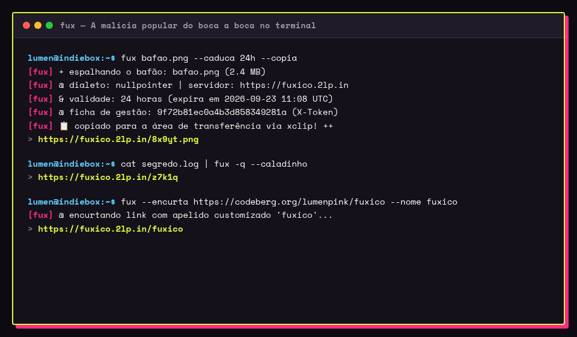

Tanto o binário compilado em Rust quanto o script universal em Bash compartilham o mesmo nome curto (fux), as mesmíssimas opções bilíngues e arquivo de configuração unificado.

Deboche, telemetria e fichas de gestão vão para o stderr. A URL pura vai para o stdout.
Essa garantia assegura que o fux nunca quebre seus pipes no shell, scripts automatizados ou área de transferência:
# Enviar e copiar direto pra área de transferência (xclip / wl-copy / pbcopy): fux foto.png --copia # Atribuir a URL limpa direto para uma variável de shell: url=$(fux relatorio.pdf --caladinho) # Enviar saída de comando direto como link efêmero de queima-de-arquivo: dmesg | fux -q | xclip -selection clipboard # Publicar anotação em Markdown como página Zine com realce de sintaxe: fux memo.md --doc # Publicar Gist com múltiplos arquivos de código (com abas e download ZIP): fux gist src/main.rs Cargo.toml README.md # Criar repositório Git bare remoto instantâneo via HTTP smart protocol: fux git init meu-projeto
O Fuxico oferece paridade bilíngue total. Você pode misturar opções em português ou inglês à vontade:
| Flag Curta | Flag Longa (Português) | Flag Longa (Inglês) | Descrição |
|---|---|---|---|
-e <TEMPO> |
--caduca <TEMPO> |
--expire <TEMPO> |
Tempo de retenção (ex: 10m, 2h, 7d, ou número de horas). |
-q / -o |
--queima |
--oneshot |
Queima-de-arquivo: o arquivo se autodestrói logo após o 1º download. |
-s |
--segredo |
--secret |
Gera um slug secreto e imprevisível de alta entropia (16 caracteres). |
-n <NOME> |
--nome <NOME> |
--name <NOME> |
Apelido amigável de download (ex: /<slug>.<ext>/<nome>) ou slug personalizado. |
-u <URL> |
--encurta <URL> |
--url <URL> |
Encurta uma URL de destino e gera link curto de redirecionamento. |
-c |
--copia |
--clipboard |
Copia o link resultante automaticamente para a área de transferência. |
-Q |
--caladinho |
--quiet |
Silencia todo o deboche no stderr; emite apenas a URL pura no stdout. |
-l |
--lista |
--list |
Lista uploads ativos (requer ficha de gestão ou token mestre). |
-d <SLUG> |
--apaga <SLUG> |
--delete <SLUG> |
Apaga um arquivo ou link encurtado usando sua ficha de gestão (X-Token). |
-t <TOKEN> |
--ficha <TOKEN> |
--token <TOKEN> |
Ficha de gestão (X-Token) ou token de autorização mestre da instância. |
-S <URL> |
--servidor <URL> |
--server <URL> |
Instância do Fuxico de destino (padrão: https://fuxico.2lp.in). |
-D <DIAL> |
--dialeto <DIAL> |
--dialect <DIAL> |
Protocolo de envio: nullpointer (0x0.st) ou rustypaste. |
-M |
--documento |
--doc |
Publica nota Markdown como documento Zine com realce de sintaxe e sumário. |
-g / fux gist |
--fuxico-gist |
--gist |
Envia gist com múltiplos arquivos, interface de abas e ZIP para download. |
-G / fux git init |
--novo-git |
--git-init |
Inicializa repositório Git bare remoto sobre HTTP smart protocol. |
Defina os valores padrão para os clientes em Rust e Bash em ~/.config/fux/config.toml:
# URL do servidor server = "https://fuxico.2lp.in" # Token mestre (para instâncias privadas) ou token padrão # token = "seu-token-secreto" # Dialeto padrão (nullpointer ou rustypaste) dialect = "nullpointer" # Tempo de retenção padrão expires = "24h" # Queima-de-arquivo por padrão oneshot = false # Copiar automaticamente para o clipboard clipboard = true
Já usa rpaste (rustypaste-cli) ou 0x0? Eles funcionam imediatamente com o Fuxico:
Exporte a variável ou configure ~/.config/rustypaste/config.toml:
export RPASTE_SERVER="https://fuxico.2lp.in"
Depois use os comandos normais:
rpaste foto.png -o -e 2h
Aponte para a instância do Fuxico:
export NULLPOINTER_URL="https://fuxico.2lp.in"
Compatibilidade total com headers de token e deleção:
0x0 -s -e 48 documento.pdf